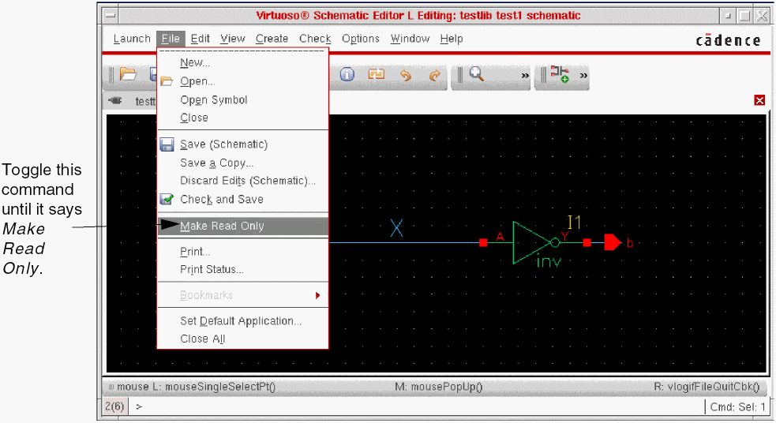
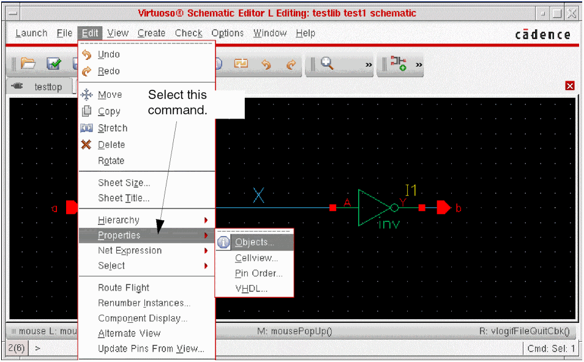
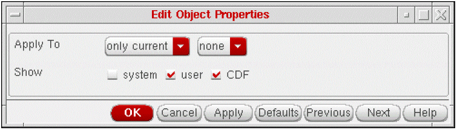
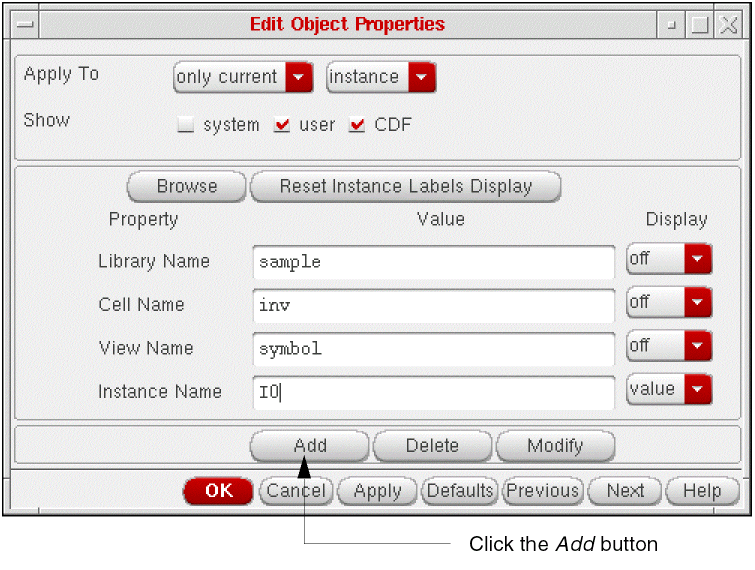
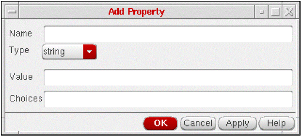
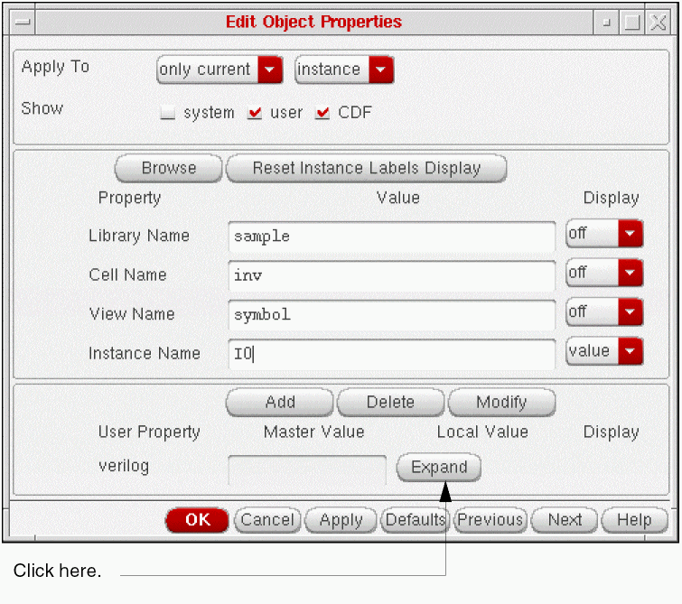
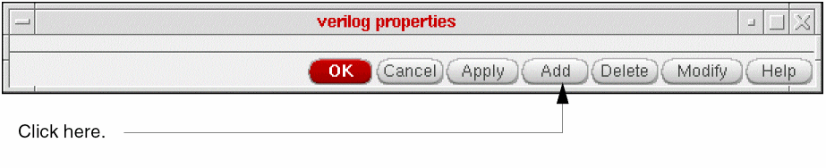
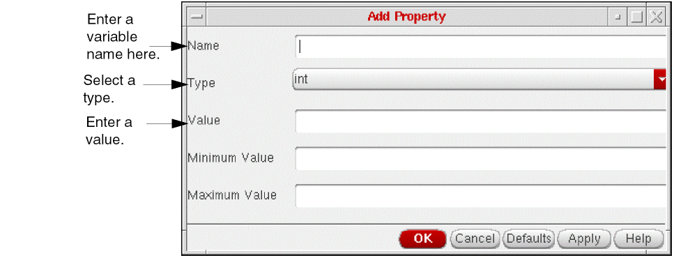
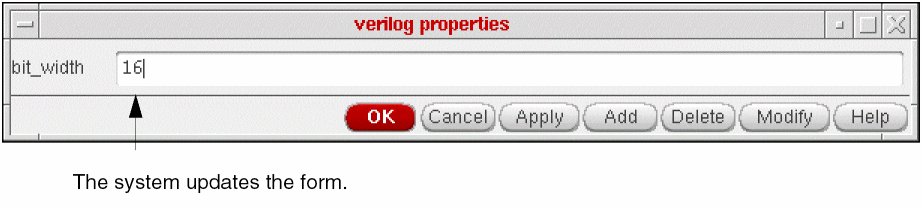
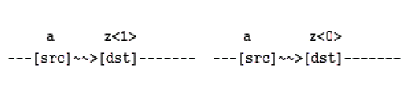

5
Netlisting
When you netlist your design, the netlister reads from the top level schematic or the HDL textual view of your design, checking for instance names, connectivity, any properties you have given to instantiations of cells, and properties that you assign to instantiations that take precedence over the properties assigned to the master cells. The result is a textual description of your design and a test fixture template. This chapter describes the following:
- Simulation Process Flowchart
- Netlister Inputs and Outputs
- Property Types
- Inherited Connection Support
- Using a Verilog File Reference
- Iterated Instances Support
- Controlling Netlister Actions
- Adding Simulation Properties
- Netlisting Switch-RC Cells
- Using CDF Properties
- Formatting Netlists
- Netlisting AutoLayout Views
- Customizing Test Fixture Variables
- Customizing the Netlisting Variables
- File Structure Created by the Netlister
- Split Bus
- Support for Verilog IEEE 1364-2001
Simul ation Process Flowchart
Netlister Inputs and Outputs
Property Types
There are four property types that you can assign to the schematic views of master cells and instantiations of their symbol views. Those property types are:
- Verilog properties
- Timing delays and drive strengths
- Verilog views
- Netlister action (nlAction) properties
lxRemoveDevice property at the instance level. This property is used to short terminals of a device. For more details, refer to the Removing Devices with Multiple Terminals section of Open Simulation System Reference.Verilog Properties
Verilog® properties are translated to
Timing Delays and Drive Strengths
You can assign timing delays and drive strengths to leaf cells (that is, the cells that contain no instantiations).
Verilog Views
Verilog view types identify simulation models that the netlister references when netlisting individual instances in your design.
In addition to the cellviews listed in your view list, you can select the following types of simulation models:
LAI provides libraries of software models used for board-level devices. The LAI models are linked to the NC-Verilog® simulator through the LAI interface software provided with NC-Verilog.
LMSI produces hardware modelers and the model and interface software that supports these modelers. Hardware modeling enables the use of silicon chips to model the behavior of board-level devices. The LMSI hardware models are connected to the NC-Verilog simulator through interface software based on the Programming Language Interface (PLI).
Netlister Actions
Netlister action (nlAction) properties direct the netlister to perform specific actions. For example, you can assign an ignore netlister action property to instances of discreet components to prevent them from being netlisted.
The valid netlister actions are ignore and stop . The syntax is
nlAction="ignore"
nlAction="stop"
Inherited Connection Support
Inherited connections is an extension to the connectivity model that allows you to create global signals and override their names for selected branches of the design hierarchy. This flexibility allows you to use
- Multiple power supplies in a design
- Overridable substrate connections
- Parameterized power and ground symbols
This section explains how the Verilog netlister handles multiple power and ground supplies in a Cadence Virtuoso® Design Environment schematic design.
To learn about connectivity and naming conventions for inherited connections and how to add and edit net expressions in a schematic or symbol cellview, refer to the Virtuoso Schematic Editor L User Guide.
Features
Support for inherited connections in the NC-Verilog Integration Environment includes
- Pseudo ports The Verilog language does not support global signals. To support inherited connections, pseudo ports are generated through the hierarchy from where the net expression property is set to where the net expression is defined. One pseudo port is created for each inherited signal.
- Netlisting Modes The Verilog HNL netlister supports inherited connections in both full and incremental netlisting modes.
Limitations
- Due to the introduction of pseudo ports in the resulting netlist, inherited connections cannot be inherited through text views. This is because the netlister cannot insert ports into a user-written textual description.
-
Because the netlister creates a new pseudo port for each inherited terminal by default, the resulting netlist will not absolutely match the netlist for the functional view, which is based on the module’s exact pin count. Consequently, simulation comparison tools, such as SimCompare, may report simulation differences due to the extra pseudo ports. Also, when backannotation is performed on a lower level-module that has extra pseudo ports, the SDF annotator of the Verilog simulator will flag a backannotation error.
Design Example
This section describes how you create an inherited property in VSE that handles multiple supplies.
The example assumes a need to create a generic design component, such as an inverter.
Depending on the block the inverter is instantiated in, the connections to power may be either 5 volt or 3 volt. This information cannot be inherently placed within the inverter schematic because the information must be common. Accordingly, the schematic uses the generic net
Now, consider the user instantiating these components (or blocks built out of these components) at some arbitrary level of hierarchy above, who needs to redefine vdd! to mean my5V and my3V respectively.
In the schematic view of the cell inv, instead of using the general power and ground symbols, nets have been connected to those two nodes, and labels attached to them allowing inherited redefinition of the net name. The power connection (vdd!) has been defined to be the expression [@vdd:%:vdd!], which is interpreted as “set the name of this net to the name assigned to the property vdd, if you find it; otherwise, the default name of this net should be vdd!.” The default net must be global.
In the schematic view of the cell inv, the net expression for the ground connection (gnd!) is [@gnd:my%:gnd!]. This means ‘find the value for the property gnd, prepend the prefix my, and use the result as the inherited net name’. The result is: mygnd! The net mygnd! must exist where the property gnd is set.
In the top-level schematic, the properties gnd and vdd have been added to instance I1 with values gnd! and my3V respectively. In doing so, we have redefined the two parameterized nets in the inv schematic, such that the top net will now be replaced by the global net my3V and the bottom net will be replaced by the global net mygnd!
Similarly by setting the properties gnd and vdd to gnd! and my5V respectively in instance I2, we redefine the topmost net in the inverter schematics referenced by instance /I2/I3 and /I2/I4 to be the net my5V. The bottom net is mygnd!
Netlist Example
This section describes how the netlister handles inherited connections within the NC-Verilog Integration Environment.
Because the Verilog language does not support global nets, OSS offers the HNL Verilog formatter a special way to support inherited connection within the NC-Verilog Integration Environment. Additional ports are generated down the hierarchy from where the net expression property is set to where the net expression is defined. One additional port is created for each inherited net.
The resulting netlist will look something like the following for the above example:
// Global nets module
`celldefine module cds_globals; supply1 my3V_;
supply0 gnd_;
supply1 my5V_;
endmodule
`endcelldefine
// Library - mylib, Cell - myinv, View - schematic
// LAST TIME SAVED: Aug 13 15:16:34 1998
// NETLIST TIME: Aug 13 15:16:41 1998
`timescale 1ns / 1ns
module myinv ( Y, inh_gnd, inh_vdd, A ); output Y;
input A;
inout inh_gnd, inh_vdd;
specify
specparam CDS_LIBNAME = "mylib";
specparam CDS_CELLNAME = "myinv";
specparam CDS_VIEWNAME = "schematic";
endspecify
nmos N0( Y, inh_gnd, A);
pmos P0( inh_vdd, Y, A);
endmodule // Library - mylib, Cell - buffer, View - schematic // LAST TIME SAVED: Aug 13 15:09:32 1998 // NETLIST TIME: Aug 13 15:16:41 1998 `timescale 1ns / 1ns module buffer ( Y, inh_gnd, inh_vdd, A ); output Y;
input A;
inout inh_gnd, inh_vdd;
specify
specparam CDS_LIBNAME = "mylib";
specparam CDS_CELLNAME = "buffer";
specparam CDS_VIEWNAME = "schematic";
endspecify
myinv I3 ( Y, inh_gnd, inh_vdd, net6);
myinv I2 ( net6, inh_gnd, inh_vdd, A);
endmodule
// Library - mylib, Cell - top, View - schematic // LAST TIME SAVED: Aug 13 15:09:46 1998 // NETLIST TIME: Aug 13 15:16:41 1998 `timescale 1ns / 1ns module top ( OUT, IN ); output OUT;
input IN;
specify
specparam CDS_LIBNAME = "mylib";
specparam CDS_CELLNAME = "top";
specparam CDS_VIEWNAME = "schematic";
endspecify
buffer I0 ( net4, cds_globals.gnd_, cds_globals.my3V_, IN);
buffer I1 ( OUT, cds_globals.gnd_, cds_globals.my5V_, net4);
endmodule
Enhanced Support for Inherited Connections
A new SKILL environment variable, simPrintInhConnAttributes, allows you to prevent the creation of pseudo ports and get the inherited connections information in the netlists which you started off with at the time of design entry.
simPrintInhConnAttributes is a boolean variable with a default value as nil. You can set this environment variable in the .simrc file. The syntax is as follows:
simPrintInhConnAttributes = t/nil
As the default value is nil, by default the Verilog netlister creates pseudo terminals for intermediate levels of the hierarchy.
The following figure shows an example of a buffer that uses explicit terminals with inherited connections for the power and the ground supplies.
For the above example, there are two versions of the netlist generated by Verilog Netlister corresponding to:
The Verilog netlist obtained when simPrintInhConnAttributes = ’nil is as follows. Notice that in each of the netlists, the inherited connections are translated to pseudo ports highlighted in bold.
For cds0
// Library - test2, Cell - inv, View - schematic
// LAST TIME SAVED: Mar 24 15:37:26 2004
// NETLIST TIME: Jun 29 14:52:42 2005
‘timescale 1ns / 1ns
module inv ( out, .grnd(inh_gnd), .powr(inh_vdd), in );
output out;
inout inh_gnd, inh_vdd;
input in;
specify specparam CDS_LIBNAME = "test2";
specparam CDS_CELLNAME = "inv";
specparam CDS_VIEWNAME = "schematic";
endspecify
tranif1 M1( out, inh_gnd, in);
tranif0 M0( inh_vdd, out, in);
endmodule
For cds1
// Library - test2, Cell - buff, View - schematic
// LAST TIME SAVED: Oct 6 12:04:54 2004
// NETLIST TIME: Jun 29 14:52:42 2005
‘timescale 1ns / 1ns
module buff ( out, DVDD, DVSS, inh_vdd, in ); output out;
inout DVDD, DVSS;
input in;
inout inh_vdd;
specify specparam CDS_LIBNAME = "test2";
specparam CDS_CELLNAME = "buff";
specparam CDS_VIEWNAME = "schematic";
endspecify
inv I1 ( .powr(inh_vdd), .grnd(cds_globals.GND_), .in(net6),
.out(out));
inv I0 ( .powr(DVDD), .grnd(DVSS), .in(in), .out(net6));
endmodule
For cds2
// Library - test2, Cell - top2, View - schematic
// LAST TIME SAVED: Mar 24 15:55:12 2004
// NETLIST TIME: Jun 29 14:52:42 2005
‘timescale 1ns / 1ns
module top2 ( out, DVDD, DVSS, in ); output out;
inout DVDD, DVSS;
input in;
specify specparam CDS_LIBNAME = "test2";
specparam CDS_CELLNAME = "top2";
specparam CDS_VIEWNAME = "schematic";
endspecify
buff I0 ( .DVSS(DVSS), .DVDD(DVDD), .in(in), .out(out), .inh_vdd(cds_globals.vdd_));
endmodule
The Verilog netlist obtained when simPrintInhConnAttributes = ’t is as follows. In the following netlists notice that the connectivity information is preserved and netExpression and netSet properties defined.
For cds0
// Library - test2, Cell - inv, View - schematic
// LAST TIME SAVED: Mar 24 15:37:26 2004
// NETLIST TIME: Oct 19 19:25:00 2004
‘timescale 1ns / 1ns
module inv ( out, .grnd(gnd_), .powr(vdd_), in ); output out;
(* netExpr = "gnd(gnd_)" *)inout gnd_;
(* netExpr = "vdd(vdd_)" *)inout vdd_;
input in;
specify specparam CDS_LIBNAME = "test2";
specparam CDS_CELLNAME = "inv";
specparam CDS_VIEWNAME = "schematic";
endspecify
tranif1 M1( out, gnd_, in); tranif0 M0( vdd_, out, in); endmodule
For cds1
// Library - test2, Cell - buff, View - schematic
// LAST TIME SAVED: Oct 6 12:04:54 2004
// NETLIST TIME: Oct 19 19:25:00 2004
‘timescale 1ns / 1ns
module buff ( out, DVDD, DVSS, in ); supply1 VDD_; supply0 GND_; output out;
inout DVDD, DVSS;
input in;
(* netExpr = "vdd(vdd_)" *) wire vdd_;
specify
specparam CDS_LIBNAME = "test2";
specparam CDS_CELLNAME = "buff";
specparam CDS_VIEWNAME = "schematic";
endspecify
(* netSet = "gnd" *)(* gnd = "GND_" *)inv I1 ( out, GND_, vdd_, net6);
(* netSet = "vdd" *)(* vdd = "VDD_" *)inv I0 ( net6, DVSS, DVDD, in);
endmodule
For cds2
// Library - test2, Cell - top2, View - schematic
// LAST TIME SAVED: Mar 24 15:55:12 2004
// NETLIST TIME: Oct 19 19:25:00 2004
‘timescale 1ns / 1ns
module top2 ( out, DVDD, DVSS, in ); output out;
inout DVDD, DVSS;
input in;
specify specparam CDS_LIBNAME = "test2";
specparam CDS_CELLNAME = "top2";
specparam CDS_VIEWNAME = "schematic";
endspecify
buff I0 ( out, DVDD, DVSS, in); endmodule
Using a Verilog File Reference
In the configuration view of a design, you can add a reference of an external Verilog file for binding a cell, an instance, or an occurrence to a view in the referenced file. For details, see Referencing a Verilog File.
If you have specified a Verilog file reference through Virtuoso Hierarchy Editor and then netlist the design using the NC-Verilog netlister, the netlister uses the referenced Verilog file for cell binding and instance binding.
The netlister also creates a config_file file in the run directory that contains the binding information. Following is an example of config_file:
instance test.top.Iinvpp8_39 use tmplib1.inv ;
instance test.top.Iinvpp1_22 use tmplib1.inv ;
Iterated Instances Support
NC-Verilog supports netlisting of iterated instances without any expansion according to the Verilog 2001 standard.
An iterated instance refers to an array of multiple instances. The iterated instance feature specifies that there is one-to-one mapping between a schematic design and a netlist with respect to iterated instances. This feature reduces netlist size, which further results in significant decrease in the time taken to generate a netlist. For example, in a Verilog design with an iterated instance of 8K range, a netlist is generated in approximately four minutes. This is an improvement over nine hours taken earlier without iterated instances support.
The following figure shows a design with iterated instance, I3<2:0>.
Earlier, each iterated instance was expanded to a list of individual instances and netlisted separately. The following example shows an iterated instance, I3<2:0>, which is expanded as three individual instances, I3_2_, I3_1_, and I3_0_:
STRINGA I3_2_(M1_BL[2], WL_BLSEL_H[127], WL_GSEL, {A,A});
STRINGA I3_1_(M1_BL[1], WL_BLSEL_H[127], WL_GSEL, {A,A});
STRINGA I3_0_(M1_BL[0], WL_BLSEL_H[127], WL_GSEL, {A,A});
The iterated instance netlisting feature is enabled by default. The following example shows an array of iterated instances, which is processed as a single instance, I3<2:0>:
STRINGA I3[2:0](M1_BL[2:0], WL_BLSEL_H[127], WL_GSEL, {A,A});
To disable the iterated instance netlisting, set the vlogExpandIteratedInst flag to true in the .simrc file or at CIW as:
If a design module has multiple iterated instances with the same base name, the netlister prints them in the expanded form, even if the logExpandIteratedInst flag is not set to t. For example, consider a schematic that contains split iterated instances I0<2:0> and I0<3>. In this case, the netlister prints the instances in the expanded form, as illustrated in the following Verilog netlist snippet:
dummy I0_2_ ( cds_globals.gnd_, net3);
dummy I0_1_ ( cds_globals.gnd_, net3);
dummy I0_0_ ( cds_globals.gnd_, net3);
dummy I0_3_ ( net2, cds_globals.gnd_);
If there are no aliases in a design, you can stop alias processing to further improve NC-Verilog performance. For example, if you set the hnlIgnoreAlias flag to true in a Verilog design with an iterated instance of 8K range, a netlist is generated in approximately 1 second. This is a further improvement over the 4 minutes taken when the flag value is false. The hnlIgnoreAlias flag is set to true as:
Controlling Netlister Actions
You can modify netlisting options at any time during a session by changing the options on the
The Netlist Setup form lets you
- Specify the order of precedence for cellview translation
- Specify the level of hierarchical expansion
- Specify the syntactical formats used in the netlist; for example, you can preserve bus structures [vectors] or translate them to bit netlists [scalars].
- Assign global nets to net types supply0 and supply1
- Specify whether netlisting is performed in the foreground or background
- Specify how to synchronize terminals of an instance and its switched master
Using View Lists
The view list lets you specify the order of precedence that the netlister uses to select and netlist the cellviews for a given master cell. The following list shows the default order of precedence:
functional behavioral system hdl verilog schematic symbol
Beginning with the first cellview in the list, the netlister traverses the view list, in order, until an existing cellview is found. That cellview is then used to netlist the cell. This process is repeated until all the cells of your design are netlisted.
Using Stop Lists
In addition to selecting a cellview for netlisting, you can control the hierarchical expansion of cells by specifying the stop list.
When the netlister encounters a cellview from the view list, the netlister checks to see if the cellview is in the stop list. If the cellview is in the stop list, the netlister stops further expansion of the design at this level. If the cellview is not in the stop list, the netlister continues the expansion by examining instances contained in the chosen cellview.
The order of cellviews in the stop list is irrelevant. The default stop list is
functional behavioral system hdl verilog symbol
You can use the Netlist Setup form to modify the view and stop lists.
Starting the Netlister
In the simulation environment, you must explicitly start the netlister
- Prior to simulating a new design
- When any cell in your design is modified
- When any cell instantiated from a source library is modified
To start the netlister, on the fixed menu click Generate Netlist or from the menu bar choose Commands – Generate Netlist.
User Messages
The netlister issues messages to inform you how netlisting is being performed. For example, it will let you know
- The syntactical formats you have selected to netlist; that is, whether you preserved bus structures (vectors) or translated them to bit netlists (scalars)
- Which view is used for netlisting each cell and cellviews at which hierarchical expansion is stopped
- When global nets are incorrectly specified
- If all design cells are being renetlisted or you are netlisting incrementally
- Any cellnames that are potentially illegal Verilog names and the names they are mapped to
You can set the error or warning to display only error or only error and warning messages, respectively.
Global Nets Not Power or Ground
You can specify that a net is a global signal by specifying an exclamation point (!) as the last character in its name in a schematic view.
You normally specify global signals in one of the following locations:
- The Global Power Nets or Global Ground Nets text entry fields
- The OSS global variable assignments to simVerilogPwrNetList or simVerilogGndNetList
When the netlister encounters global signal declarations in other locations, the netlister instantiates those signals in a special purpose module called globals_module.
The globals_module resides in the automatically generated cds_global.v file in the hdlFilesDir directory. The globals_module is instantiated in the test fixture file. The test fixture is the only place in which you can place values on these nets. Do not attempt to drive them in a design module or in the globals_module definition.
The signals instantiated in the globals_module module are of the type wire. In each design module, the netlister places continuous assignments that set the local values of the global nets to their global values. For example, if the netlister encountered the global signal global_clock, it would create the following module:
module globals_module;
wire global_clock;
endmodule
The netlister would also create the following continuous assignment in each design module:
assign global_clock=top.globals_inst.global_clock;
The netlister generates a test fixture template that includes an instantiation of the globals_module module. If you create your own test fixture template, you need to add an instantiation of the globals_module called globals_inst to your template.
Global signals on schematics are mapped to global_x, where x is a unique number. The mapping for a cell’s global signals is contained in the globalmap file in the ihnl directory of the run directory. You can examine the globalmap file to see entries similar to the following that demonstrate the mappings:
gnd! global_0
vdd! global_1
global_clock! global3
To propagate signals on all the wires named global_clock in the design modules, assuming that global_clock maps to global_3, place lines similar to the following in the test fixture:
module test;
reg global_clock_value;
globals_module globals_inst();
assign
top.globals_inst.global_3=global_clock_value;
initial
global_clock_value=0;
always
begin
#10;
global_clock_value=~global_clock_value;
end
endmodule;
Be sure to refer to global nets by their complete hierarchical names when you make assignments to them. Failing to refer to the complete hierarchical names can result in changes that have less than global scope.
Synchronizing Terminals
By default, the NC-Verilog netliser retains the design terminals during netlist generation. However, if there is a mismatch between the terminals of an instance/placed master and its switch master, the netlister expands the terminals in the netlist.
For all kinds of terminals, scalar, vector, or bundles, the netlister checks the names of terminals. If the names are precisely same, the netlister retains the bus terminals in the netlist. For example, if the placed master of an instance has terminals as a[0:3], b, and d and the switch master also has same terminals as a[0:3], b, and d, the netlist too has same terminals. In case of a mismatch, the netlister splits the terminals that mismatch. For example, if the placed master has terminals as a[0:2], b, and d and the switch master has terminals as a[0], a[1], a[2], b, and d, the netlister splits the terminal of the placed master as a[0], a[1], a[2].
However, you can choose to synchronize the mismatched terminals while generating a netlist using the Terminal SyncUp option on the Netlist Setup form. You can also set the hnlVerilogTermSyncUp variable in the .vlogifrc file.
The Terminal SyncUp option provides the following three choices:
- Expand on Mismatch: Retains the design terminals, but expands the mismatched terminals, as explained above. This is the default option.
- Honor Switch Master: Honors the terminals of the switch master and merges/expands the ports of the placed master to match with the switch master. This option does not work with explicit netlisting and is helpful when you want to netlist text views.
- Merge All: Merges the placed master and switch master terminals. The netlister creates pure buses or scalar terminals. Using this option, you can create pure explicit netlist for any type of design.
If there are terminals on the placed master or symbol view but not in the switched master or schematic view, by default, the netlist generation continues and the mismatched terminals are dropped from the netlist. This is because, by default, the hnlVerilogTermMismatchAction variable is set as ignore.
If you want to have an error or warning message for such terminals, set the hnlVerilogTermMismatchAction variable to any of the following values:
-
error: Stops the netlist generation and prints an error message. -
warning: Continues netlist generation, but drops the mismatched terminal from the netlist and prints a warning message.
physOnly attribute. These terminals are used to implement connectivity model and are by default ignored by an OSS-based flat netlisterHonor Switch Master or Merge All, setting some netlist configuration options might give some unexpected results. For example, if you set the hnlVerilogNetlistNonStopCellExplicit option in .simrc or the Drop Port Range and Preserve Buses options in the Netlist Setup form and set the Terminal SyncUp option as , some unexpected results are generated. Therefore, it is recommended to set default values for the netlist configuration options while using Terminal SyncUp option.
Consider the following example. The placed master of a cell, mycell, is as follows:
The terminals in the symbol are:
The schematic of the cell, mycell, is as follows:
The terminals in the schematic are:
a[0], a[4], a[5], a[6], a[7], b, c, d, out[5]
Expand on Mismatch
If you choose the default option to expand on mismatch, the terminals are expanded wherever there is a mismatch in the name. In the given example, terminal a[4:7] of the instance of mycell has been expanded. The generated netlist is given below:
module mycell ( out[5], {b, c, d}, inh_mygnd, inh_myvdd, a[4], a[5], a[6], a[7] );
inout inh_mygnd, b, c, d;
output [5:5] out;
input [4:7] a;
inout inh_myvdd;
specify
specparam CDS_LIBNAME = "mylib";
specparam CDS_CELLNAME = "mycell";
specparam CDS_VIEWNAME = "schematic";
endspecify
and I1 ( net26, inh_mygnd, b, c, d);
and I0 ( net31, a[4], a[6], a[5], a[7]);
and I2 ( out[5], net31, net26);
endmodule
module topcell ( out1, in1[0], in1[5:7], {in2[0], in1[1:3]} );
output out1;
input [0:0] in2;
input [0:7] in1;
specify
specparam CDS_LIBNAME = "mylib";
specparam CDS_CELLNAME = "topcell";
specparam CDS_VIEWNAME = "schematic";
endspecify
mycell I0 ( out1, in1[0], in1[5:7], in1[0], cds_globals.vdd_, in2[0], in1[1], in1[2], in1[3]);
endmodule
You can use the Expand on Mismatch option with Netlist Explicitly option on the Netlist Setup form to generate explicit netlist, but the resulting netlist might not be a purely explicit. Therefore, if you want to generate a pure netlist, it is recommended to use the Merge All option instead.
Honor Switch Master
With implicit netlisting, you can choose to honor the switch master at both module and instance level to synchronize the terminals. In this case, the netlister merges/expands the ports of the placed master to match with the switch master. If some extra terminals are found on the placed master, the netlister ignores those terminals and generates netlist. However, if there are extra terminals on the switch master and no matching terminals are found on the placed master, the netlister gives errors.
For the above example, if the Honor Switch Master option is selected, the netlist will be generated as given below:
module mycell ( out, inh_mygnd, {b,c,d}, inh_myvdd, a[4], a[5], a[6], a[7] );
inout inh_mygnd, inh_myvdd, d, c, b;
output [5:5] out;
input [4:7] a;
specify
specparam CDS_LIBNAME = "mylib";
specparam CDS_CELLNAME = "mycell";
specparam CDS_VIEWNAME = "schematic";
endspecify
and I1 ( net26, inh_mygnd, b, c, d);
and I0 ( net31, a[4], a[5], a[6], a[7]);
and I2 ( out[5], net31, net26);
endmodule
module topcell ( out1, in1[5:7], in1[0], {in2[0],in1[1:3]} );
output out1;
input [0:0] in2;
input [0:7] in1;
specify
specparam CDS_LIBNAME = "mylib";
specparam CDS_CELLNAME = "topcell";
specparam CDS_VIEWNAME = "schematic";
endspecify
mycell I0 ( out1, in1[0], in1[5:7], cds_globals.vdd_, in1[2], {in2[0],in1[1]}, in1[3]);
endmodule
Merge All
In this case, the netlister merges all the vector terminals to create pure buses. Scalar terminals are kept as is and the bundled terminals are converted to scalar ports.
Following are the special considerations for merging:
-
While merging the terminals of a single bus, if there are holes (that means, if connections for some terminals of a bus are missing), the netlister inserts dummy connections in the netlist. For example, in the schematic view of the cell, mycell, shown above, the connections are defined only for terminals
a[0],a[4],a[5],a[6], anda[7]of the busa. For other terminals, the connections are missing. With Merge All option, the netlister createS dummy connections for such terminals to create a pure bus. By default, these dummy nets are named asdummy_net_cadenceand the terminals are of typeinput. It is recommended that you should not create your own nets with this name. - If the vector terminals being merged are of different directions, the netlister still merges them and considers them as inout terminals.
- If the switch master of an instance is a text view, the netlister automatically honors the switch master for that instance and creates a valid Verilog netlist.
For the example given above, if the Netlist Explicitly option is on, the netlist will be generated as given below:
module mycell ( out, .a({inh_mygnd,dummy_net_cadence,dummy_net_cadence,dummy_net_cadence,a[4],a[5],a[6],a[7]}), b, c, d, inh_myvdd );
inout b, c, d, inh_myvdd, inh_mygnd;
input dummy_net_cadence;
output [5:5] out;
input [4:7] a;
specify
specparam CDS_LIBNAME = "mylib";
specparam CDS_CELLNAME = "mycell";
specparam CDS_VIEWNAME = "schematic";
endspecify
and I1 ( net26, inh_mygnd, b, c, d);
and I0 ( net31, a[4], a[6], a[5], a[7]);
and I2 ( out[5], net31, net26);
endmodule
module topcell ( out1, .in1({in1[0],in1[1],in1[2],in1[3],dummy_net_cadence,in1[5],in1[6],in1[7]}), in2 );
output out1;
input dummy_net_cadence;
input [0:0] in2;
input [0:7] in1;
specify
specparam CDS_LIBNAME = "mylib";
specparam CDS_CELLNAME = "topcell";
specparam CDS_VIEWNAME = "schematic";
endspecify
mycell I0 ( .out(out1), .a({in1[0],dummy_net_cadence,dummy_net_cadence,dummy_net_cadence,in2[0],in1[1],in1[2],in1[3]}), .b(in1[5]),
.c(in1[6]), .d(in1[7]), .inh_myvdd(cds_globals.vdd_));
endmodule
In the above example, dummy_net_cadence are the dummy connections inserted for holes.
Creating Pure Explicit Netlist
To generate a pure explicit netlist, you can configure the following settings in the Netlist Setup form:
When these two options are set, the netlister generates pure netlist for all the designs irrespective of the configuration of terminals between placed master and switch master. All types of terminals, split buses, bundles, or, mismatched terminals are merged.
While generating pure netlists, the netlister ignores extra terminals found at the instance, but if extra terminals are found at the switch master, the netlister flags errors.
Including Verilog Text Views in Netlist
To include verilog text views in the netlist, set the Terminal SyncUp option on the Netlist Setup form to Honor Switch Master. In this case, the netlister honors only the terminal definitions existing in the text view and creates these terminals as is at the instance line.
While generating netlists with Verilog text views, the netlister ignores extra terminals found at the instance, but if extra terminals are found at the switch master, the netlister flags errors.
Adding Simulation Properties
You can add the following simulation properties to instances you have placed in your design and to the schematic views of their master cells.
- Verilog properties that translate to Verilog parameter statements for master cells
- Verilog properties that translate to Verilog defparam statements for instances
- Delay and drive strengths for instances
- Netlister action (nlAction) properties for instances and master cells
- Ancillary data files (hnlVerilogCellAuxData) for schematic cell views
Properties Added for Imported Modules
When you use Verilog In editor to import an HDL Verilog module, the system automatically creates the following properties:
The Verilog netlister uses these properties to control the port sequence, model name, formatting functions and timescale.
When all of these properties exist, the netlister formats the instance ports implicitly based on the portOrder property definition. You can use the
The following list defines each property and provides an example for each property.
|
Displays a list that specifies the port ordering (pin names) by pin sequence. |
syntax: ("pinName1" "pinName2" "pinName3"....)
example ("out" "in1" "in2")
If the portOrder property is not set for the hnlVerilogPrintPrimGate, hnlVerilogPrintBehavePortOrder, and hnlVerilogPrintBehaveModel formatting functions, then the default portOrder is used. The default portOrder is the Output Pins, followed by the InputOutput Pins, followed by the Input Pins, in the alphanumeric order.
|
Displays a list that specifies the order of Verilog parameter names. This needs to be added when |
syntax: ("paramName1" "paramName2" "paramName3" ....)
example ("RISE" "FALL" "VDD")
module myinv ( Y, A );
output Y;
input A;
parameter RISE = "10ps",
FALL = "20ps",
VDD = 5.0;
....
....
endmodule
If hnlVerilogDonotPrintDefparam is t, then the instance I0 will be formatted something like this in the resulting netlist.
module buffer(Y,A);
output Y;
input A;
myinv I0("25ns","35ns") (Y,A);
.....
endmodule
The Netlister will print the defparam values corresponding to the parameter names listed in the paramOrder property.
syntax: "verilogModuleName"
example "and"
instID->modelName
The netlister looks at the modelName property on the instance if the switch master of the instance is a stopping view and the properties, verilogFormatProc and hnlVerilogFormatInst Property are not defined on the master.
An exception to this rule is when the format procedures hnlVerilogPrintPrimGate or hnlVerilogPrintBehaveModel are defined on the master then also the netlister looks for the modelName property on the instance.
If hnlVerilogIgnoreModelNameProperty is set to t, Verilog netlister will ignore the modelName property while generating the netlist.
|
Displays delays and strengths of a cellview as a string value. |
syntax: "t|nil"
example verilogPrintDelayAndStrength=t
If the verilogPrintDelayAndStrength property for a cellview is set to t, the hnlVerilogPrintLibraryModel procedure prints the delay and strength values of the cellview.
syntax: "<time_unit> / <time_precision>"
<time_unit> = <order of magnitude><unit of measurement>
<time_precision> = <order of magnitude><unit of measurement>
example “1ns / 1ps”
“10us/100ns”
|
Displays the model name and port ordering for a cell as set. |
syntax: "verilogFormatFuncName"
example "hnlVerilogPrintPrimGate"
verilogFormatProc property. The arguments should not be specified with the function name. The function uses values from the properties.You can specify the following formatting functions for this property:
-
hnlVerilogPrintBehaveModel - hnlVerilogPrintVhdlImport
- hnlVerilogPrintBehavePortOrder
- hnlVerilogPrintPrimGate
- hnlVerilogPrintLogGate
- hnlVerilogPrintLibraryModel
- hnlVerilogPrintBufif0Notif0
- hnlVerilogPrintBufif1Notif1
- hnlVerilogPrintBidiXfr
- hnlVerilogPrintNmosPmos
- hnlVerilogPrintCmos
hnlVerilogPrintBehaveModel
Displays the model name and port sequence defined with the modelName and portOrder properties, respectively, of the cellview instance. If the portOrder property is not defined, the default portOrder is displayed. This function does not print strengths and delays.
This function is used with a user-defined model.
Example: verilogFormatProc = "hnlVerilogPrintBehaveModel"
hnlVerilogPrintVhdlImport
Displays the model name defined with the modelName property of the cellview instance. If the modelName property is not defined, the default value is displayed. If the model name contains special characters, '.' or ':', they are replaced with an '_'.
This function is used to print connectivity information for the instances imported through VHDL import .
Example: verilogFormatProc = "hnlVerilogPrintVhdlImport"
hnlVerilogPrintBehavePortOrder
Displays the port sequence as specified with the portOrder property of the cellview instance. If the portOrder property is not defined, the default portOrder is used.
The function affects the port order of the cell instance.
Example: verilogFormatProc = "hnlVerilogPrintBehavePortOrder"
hnlVerilogPrintPrimGate
Displays the model name and optional port sequence defined with the modelName and portOrder properties, respectively, of the cellview instance. If the portOrder property is not defined, the default portOrder is displayed. This function also prints strengths and delays.
If the property str is set to R on the instance, then it prefixes r to the primitive name taken from the modelName property. For example, if the modelName is tranif1 and str is set to R, then the primitive name displayed is rtranif1. This function is used with Verilog primitives.
Example: verilogFormatProc = "hnlVerilogPrintPrimGate"
hnlVerilogPrintLogGate
Displays the model names defined with the modelName property and netlists them implicitly. This function is used with the following gates: nand, nor, and; as well as with other single-output logical gates.
If the property str is set to R on the instance, the function prefixes r to the primitive name taken from the modelName property.
Example: verilogFormatProc = "hnlVerilogPrintLogGate"
hnlVerilogPrintLibraryModel
Displays the model name and optional port sequence defined with the modelName and portOrder properties, respectively. The function also prints strengths and delays of the cellview, if the verilogPrintDelayAndStrength property is set to t.
This function is used with library models.
Example: verilogFormatProc = "hnlVerilogPrintLibraryModel"
hnlVerilogPrintBufif0Notif0
hnlVerilogPrintBufif0Notif0( t_gateType )
Displays bufif0 or notif0. This function is used with bufif0 or notif0 gates. The ports are displayed in the following order:
The values for these ports can be specified in any of the following ways:
output - y, input - a, not enable - en_
or
output - Y, input - A, not enable - EN_
Argument: t_gateType, the type of gate where t_gateType is one of the valid values, enclosed in quotes.
Valid Values: "bufif0" "notif0"
verilogFormatProc = "hnlVerilogPrintBufif0Notif0("bufif0")
The above example prints the following instance line:
where, bufif0 is the model name, x is the name of instance and y, a, and en_ are the names of nets connected to the output, input, and not enable ports.
hnlVerilogPrintBufif1Notif1
hnlVerilogPrintBufif1Notif1( t_gateType )
Displays bufif1 or notif1. This function is used with bufif1 or notif1 gates. The ports are displayed in the following order:
output, input, enable
The values for these ports can be specified in any of the following ways:
output - y, input - a, enable - en
or
output - Y, input - A, enable - EN
Argument:t_gateType, the type of gate where t_gateType is one of the valid values, enclosed in quotes.
Valid Values: "bufif1" "notif1"
verilogFormatProc = "hnlVerilogPrintBufif1Notif1("bufif1")
The above example prints the following instance line:
where, bufif1 is the model name, x is the name of instance and y, a, and en are the names of nets connected to the output, input, and enable ports.
hnlVerilogPrintBidiXfr
hnlVerilogPrintBidiXfr( t_gateType )
Displays tranif1 and tranif0. This function is used with tranif1 and tranif0 gates. If the property str is set to R on the instance, this function displays rtranif1 and rtranif0 gates.
The ports are displayed in the following order:
drain, source, gate.
The values for these ports can be specified in any of the following ways:
drain - d, source - s, gate - g
or
drain - D, source - S, gate - G
Argument: t_gateType, the type of gate where t_gateType is one of the valid values, enclosed in quotes.
Valid Values: "tranif1" "tranif0" "rtranif1" "rtranif0"
verilogFormatProc = "hnlVerilogPrintBidiXfr("tranif1")
The above example prints the following instance line:
where, tranif1 is the model name, x is the name of instance and d, s, and g are the names of nets connected to the drain, source, and gate ports.
hnlVerilogPrintNmosPmos
hnlVerilogPrintNmosPmos( t_gateType )
Displays pmos or nmos. This function is used with pmos and nmos gates. If the property str is set to R on the instance, this function displays rpmos or rnmos.
The ports are displayed in the following order:
drain, source, gate.
The values for these ports can be specified in any of the following ways:
drain - d, source - s, gate - g
or
drain - D, source - S, gate - G
Argument: t_gateType, the type of gate where t_gateType is one of the valid values, enclosed in quotes.
Valid Values: "pmos" "rpmos" "nmos" "rnmos"
verilogFormatProc = "hnlVerilogPrintNmosPmos("pmos")
The above example prints the following instance line:
where, pmos is the model name, x is the name of instance and d, s, and g are the names of nets connected to the drain, source, and gate ports.
hnlVerilogPrintCmos
hnlVerilogPrintCmos( t_gateType )
Displays cmos. If the property str is set to R on the instance, this function displays rcmos. This function is used with cmos gates.
The ports are displayed in the following order:
drain, source, ngate, pgate.
The values for these ports can be specified in any of the following ways:
drain - d, source - s, ngate - gn, pgate - pn
or
drain - D, source - S, ngate - GN, pgate - PN
Argument: t_gateType, the type of gate where t_gateType is one of the valid values, enclosed in quotes.
verilogFormatProc = "hnlVerilogPrintCmos("cmos")
The above example prints the following instance line:
where, cmos is the model name, x is the name of instance and d, s, gn, and pn are the names of nets connected to the drain, source, ngate, and pgate ports.
Adding Verilog Properties
Use the following procedure to add Verilog properties to instances in your design.
-
Make sure your design is editable.
 - In the design entry window, select the instance to which you want to add Verilog properties.
-
Select the Edit – Properties – Objects command.

The Edit Object Properties form appears.

The appearance of the Edit Object Properties form varies depending on the type of object you select in your design. Refer to the Virtuoso Schematic Editor L for more information about the Edit Object Properties form. -
Click Add on the Edit Object Properties form.
 The Add Property form appears.
 -
In the Name field, enter
verilogin lowercase letters. -
Select hierProp from the Type cyclic field.
The Add Property form contracts. -
Click OK on the Add Property form.
The system updates the Edit Object Properties form.
Specifying Values for Verilog Properties
Use the following procedure to specify values for user-defined properties.
-
Click the
Expand
button located next to the user-defined property.

The Verilog properties form appears. -
Click Add on the Verilog properties form.

The Add Property form appears.
 - Type a variable name in the Name field.
- Select a type from the Type cyclic field.
-
In the Value field, enter the value you want to assign to the variable you named in the Name field.
-
the property name is not
COMPONENT. - the property value is a floating point number.
- the property value is a binary/octal/decimal string.
- the first and last character of the property value are ’(’ and ’)’ respectively.
- the property value matches any of the following regular expressions: [0-9]+[0-9]*[:][0-9]+[0-9]*[:][0-9]+[0-9]* [0-9]+[.][0-9]*[:][0-9]+[.][0-9]*[:][0-9]+[.][0-9]*
-
the property name is not
-
(Optional) Click Apply on the Add Property form.
The system updates the Verilog properties form to include the property and value and the Add Property form remains open so you can add more properties.

Repeat steps 1 through 6 to add other properties to the instance. -
When you finish entering Verilog properties, click OK on the Verilog properties form.
When you renetlist your design, the system writes the instance properties as defparam statements.
Adding Delay Properties
Use the following procedure to add delay values to an instance of a leaf cell.
- Make sure your design is editable.
- In the Design Entry window, select the instance to which you want to add delay properties.
-
Select the Edit – Properties – Objects command.
The Edit Object Properties form appears.
The appearance of the Edit Object Properties form varies depending on the type of object you select in your design. Refer to the Virtuoso Schematic Editor L for more information about the Edit Object Properties form. -
Click Add on the Edit Object Properties form.
The Add Property form appears. -
In the Name field, enter the name of the delay property that you want to add to the instance.
You can specify the delay properties listed in the following table. You must enter delay property names as lowercase characters.
Delay Property Name What the Property Identifies
- Select string from the Type cyclic ield.
-
Enter the value for the delay property name specified.
The following are Verilog units of measure.
Unit of Measure What the Unit Identifies
You can specify minimum, typical, and maximum delay values for tr, tf, and tz. The format is min:typ:max. You separate the values with a colon, as shown in the following example.1ns:2ns:3ns
-
Click OK on the Add Property form.
The system updates the Edit Object Properties form.
If you want to enter multiple values, you can click Apply to submit the form and then modify the form for your next entry.
Adding Drive Strength Properties
Use the following procedure to add drive strength properties to an instance of a leaf cell.
- Make sure your design is editable.
- In the Design Entry window, select the instance to which you want to add drive strength properties.
-
Select the Edit – Properties – Objects command.
The Edit Object Properties form appears.
The appearance of the Edit Object Properties form varies depending on the type of object you select in your design. Refer to the Virtuoso Schematic Editor L for more information about the Edit Object Properties form. -
Click Add on the Edit Object Properties form.
The Add Property form appears. -
In the Name field, enter the name of the drive strength you want to define for the instance.
When you enter drive strengths, enter values for high and low strengths.
Drive Strength Name Defines - Select string from the Type cyclic field.
- Enter the value of your first drive strength entry.
-
Click OK on the Add Property form.
The system updates the Edit Object Properties form.
If you want to enter multiple values, you can click Apply to submit the form and then either modify the form for your next entry or reselect Apply.
Adding nlAction Properties
Netlister action (nlAction) properties control netlisting actions for individual cells.
Use the following procedure to add an nlAction property to an instance or to a master cell.
- Make sure your design is editable.
- In the Design Entry window, select the instance to which you want to add the property.
-
Select the Edit – Properties – Objects command.
The Edit Object Properties form appears.
The appearance of the Edit Object Properties form varies depending on the type of object you select in your design. Refer to the Virtuoso Schematic Editor L for more information about the Edit Object Properties form. -
Click the
Add
button at the bottom of the Edit Object Properties form.
The Add Property form appears. -
Type
nlActionin the Name field. - Select string from the Type cyclic field.
-
In the Value field, enter the nlAction property you want to add to the instance.
The following table summarizes nlAction properties you can add.
-
Click OK on the Add Property form.
The system updates the Edit Object Properties form.
If you want to enter multiple values, you can click Apply to submit the form and then modify the form for your next entry.
Adding Ancillary Data Files
You can add a property to a schematic cell view that forces the netlister to recognize ancillary data files as Verilog HDL input.
- This property is named hnlVerilogCellAuxData and takes a value of type ILList.
- The ancillary data files can include any Verilog command line or source code.
Ancillary data files can contain the ‘include, ‘ifdef, ‘else, and ‘endif compiler directives and other constructs that are typical in files that are conditionally included in a design. You can control the inclusion of such files in a design by placing properties on schematics that force the netlister to read ancillary data files that contain the +define command line option or the ‘define compiler directive.
Use the following procedure to add ancillary data to a master view.
- Make sure your design is editable.
-
Select the Edit – Properties – Cellview command.
The Edit Cellview Properties form appears. -
Click
Add
.
The Add Property form appears. -
Enter
hnlVerilogCellAuxDatain the Name field. - Select ILList from the Type cyclic field.
-
In the Value field, specify the ancillary data files using one of the following methods: absolute path names, relative path names, library cellviews.
The system uses the files that you identify with absolute path names as the input for NC-Verilog, but the system does not copy these files into the run directory.
The system also uses the files that you identify with relative path name or cell view information as the input for NC-Verilog. But the system copies these files into thehdlFilesDirdirectory in the run directory.
To identify the ancillary data files that are cell views that resolve to text files, you provide the names for the library, cell, and view.
There are three formats for entering data files:
Observe the following rules when specifying path names and cell views: -
Click OK on the Add Property form.
The system updates the Cellview Properties form
Verify that you have indeed added the property by checking the CellView Properties form for correct list formatting. Be sure to review the CIW log after netlisting to ensure that there was no error in handling ancillary data files. A missing or incorrect property could result in a simulation that is incorrect.
Netlisting Switch-RC Cells
A Switch-RC property is an attribute that you can attach to a data object to store timing information for simulators.
Before you can netlist Switch-RC cells, you must add Switch-RC properties to your design and set the netlister to recognize the properties.
Setting the RC Data Variable
By default, the netlister ignores properties associated with Switch-RC switches and nets. To netlist the Switch-RC properties, you must set the simVerilogHandleSwitchRCData variable to t.
There are three ways to set the value for the variable.
- Select the Netlist SwitchRC option on the Netlist Setup form
-
Edit the value in your
.simrcfile - Specify the value in the CIW command line
Entering Switch-RC Properties
To enter Switch-RC properties, you use the Add option on the Edit Properties form. You access the Edit Object Properties form from the 77 menu of the schematic editor.
Refer to the Virtuoso Schematic Editor L for more information about using the Edit Object Properties form.
Formatting Functions for MOS Cells
You can use the following functions to format MOS cells:
-
hnlVerilogPrintNmosPmos -
hnlVerilogPrintCmos -
hnlVerilogPrintBidiXfr -
hnlVerilogPrintBufif0Notif0 -
hnlVerilogPrintBufif1Notif1
Switch-RC Instance Properties
You can add the following properties to instances in your design to specify Switch-RC attributes.
Refer to the Virtuoso Schematic Editor L for more information about adding properties.
algorithm
Use this property to specify the Switch-RC algorithm (resistive).
When you do not specify an algorithm, the netlister assumes the default (that is, 'default).
The netlister always looks for the instance first, followed by the switch master.
technology
Use this property to specify the technology.
When you specify the resistive algorithm, but do not specify a technology property, the netlister assumes the default (that is, 'switch resistive default).
The netlister always looks for the instance first, followed by the switch master.
width, length (w, l)
Use these properties to specify the length and width of the switch. You must use the same units as those assigned to the technology property.
The netlister always looks for the instance first, followed by the switch master.
driveStrength
Use this property to specify the strength of a mos cell.
hnlVerilogCDFdefparamList
Use this property on the instance, CDF, or the switched master of an instance to print CDF properties by using the defparam statement. The property when defined at the instance and CDF level should be of string data type but when defined on the switched master, it should be of SKILL list type. For example, you define it on the instance or CDF as,
hnlVerilogCDFdefparamList = Asim Lsim Wsim l w
On the switched master, you define it as,
hnlVerilogCDFdefparamList = ("Asim" "Lsim" "Wsim" "l" "w")
Verilog evaluates the NLP expressions of the form atPar, pPar, dotPar, iPar and [@abc...], [+abc...], [.abc...], [~abc...] for all properties in hnlVerilogCDFdefparamList and generates warning messages in case of problems in evaluation. However, due to a limitation of the hierarchical netlister, atPar is treated as pPar and dotPar is treated as iPar.
CDS_Netlisting_Mode environment variable should be set to Analog for component parameter evaluation to take CDF properties into account. When the variable is set to Digital, CDF properties are not taken into account though it results in better netlisting performance.Verilog first searches for this property on the instance, then the CDF, and then the switched master.
Switch-RC Net Properties
You can add the following properties to nets in your design to specify Switch-RC attributes.
- netType
- chargeDecay
- tr
- tf
- chargeStrength
- c(capacitance)
- highThreshold
- lowThreshold
- hnlVerilogCDFdefparamList
Refer to the Virtuoso Schematic Editor L for more information about adding properties.
To declare that the design includes user-defined RC switch properties that must be honored in the netlist, set simVerilogHandleSwitchRCData to t from the Netlist Setup form or in .simrc.
netType
|
Default values: "trireg" "tri0" "tri1" "supply0" "supply1" "triand" "trior" "wand" "wor" "wire" Custom values: The net data type values specified in the variable hnlVerilogWireNetTypeList. |
|
chargeDecay
tr
tf
chargeStrength
c (capacitance)
highThreshold
lowThreshold
Using CDF Properties
A UNIX environment variable, CDS_Netlisting_Mode, controls how component description format (CDF) properties are interpreted during netlisting. You can set this variable in the .cshrc file. The variable can be set as Analog, Digital, and Compatibility.
The syntax for this variable is:
setenv CDS_Netlisting_Mode "Analog" "Digital" "Compatibility"
The following table gives the property search order for all the three modes, Analog, Digital, and Compatibility. It also tabulates the expression evaluation format in all the three cases.
| Setting | Property Search Order | Expression Evaluation | |
|---|---|---|---|
| CDF | NLP | ||
By default, the environment variable CDS_Netlisting_Mode is set to Digital.
CDF properties can be used by either creating a Verilog hierprop property or by using hnlVerilogCDFdefparamList parameter.
Analog.If an instance has CDF parameters, the user does not need to create a Verilog hierprop property to ask the Verilog netlister to print CDF properties by defparam statement. But the user does need to create a hnlVerilogCDFdefparamList property on the switched master of the instance cell.
property name: hnlVerilogCDFdefparamList
property type: list type
property value(example): (“Asim” “Lsim” “l” “w” “Wsim”)
The Verilog formatter looks first at the instance Verilog hierprop properties and prints out those properties. Then, the formatter looks at the switched master of instance to determine whether property hnlVerilogCDFdefparamList exist.
If the property does exist, and if the master has a formatting property which instructs the netlister to print the instance as a logic gate, then CDF properties are not defined at the instance level using the defparam statement. However, this includes the fact that delay and strengths are always printed. Therefore, tf td tr tz Low_Strength and High_Strength can exist as CDF properties and get printed for logic gates.
If the switched master of instance is a non-stopping cell, then netlister prints the default CDF properties inside the parameter block of the Verilog module of this cell. The instantiated properties get printed as defparam statements in the module which instantiates this cell.
If a CDF property of an instance cannot be found by the netlister, the CDF property will be ignored.
For example consider the following hierarchy:
Cell middle has the following base CDF properties:
decayTime :
paramType : string
parseAsNumber : yes
units : "don’t use"
parseAsCEL : no
storeDefault : no
name : decayTime
prompt : decayTime
defValue : 10000
Cap Area:
paramType : string
parseAsNumber : yes
units : lengthMetric
parseAsCEL : yes
storeDefault : no
name : area
prompt : Cap Area
defValue : 100 M
Techno Unit :
paramType : string
parseAsNumber : yes
units : "don’t use"
parseAsCEL : yes
storeDefault : no
name : unit
prompt : Techno Unit
defValue : 1.25E-15
ratio:
paramType : float
storeDefault : no
name : ratio
prompt : ratio
defValue : 2
Cell inv has following tr, tf and strength CDF properties:
Low_Strength:
paramType : string
parseAsNumber : no
parseAsCEL : no
storeDefault : no
name : Low_Strength
prompt : L_St.
defValue : strong0
High_Strength:
paramType : string
parseAsNumber : no
parseAsCEL : no
storeDefault : no
name : Hign_Strength
prompt : H_St.
defValue : strong1
tf:
paramType : string
parseAsNumber : no
parseAsCEL : no
storeDefault : no
name : tf
prompt : tf
defValue : 0ns
tr:
paramType : string
parseAsNumber : no
parseAsCEL : no
storeDefault : no
name : tr
prompt : tr
defValue : 0ns
Also, cell inv has a Verilog view that has a not formatting instruction.
The following are how CDF properties are instantiated in cell top view schematic:
C0:
decayTime -> 10000
Cap Area -> 100 M
Techno Unit -> 1.25E-15
ratio -> 5
C1:
decayTime -> 20000
Cap Area -> 100 M
Techno Unit -> 1.25E-15
ratio -> 7
C2:
decayTime -> 15000
Cap Area -> 100 M
Techno Unit -> 1.25E-15
ratio -> 9
The following are the CDF properties on inv in middle schematic:
L_St. -> strong0
H_St. -> strong1
tf -> 2ns
tr -> 3ns
Now, since CDF properties need to be searched from both device CDF and instance CDF, you need to set the CDS_Netlisting_Mode env variable to Compatibility.
Netlisting cell top view schematic gives the following output:
// Library - insideLib, Cell - top, View - schematic
// LAST TIME SAVED: Jun 15 16:04:55 1999
// NETLIST TIME: Jun 15 16:23:09 1999
‘timescale 1ns / 1ns
module top ( OUT1, OUT2, OUT3, in1, in2, in3 );
output OUT1, OUT2, OUT3;
input in1, in2, in3;
specify
specparam CDS_LIBNAME = "insideLib";
specparam CDS_CELLNAME = "top";
specparam CDS_VIEWNAME = "schematic";
endspecify
middle C2 ( OUT3, in3);
defparam
C2.decayTime = "15000",
C2.area = "100",
C2.unit = 1.25e-15,
C2.ratio = 9;
middle C1 ( OUT2, in2);
defparam
C1.decayTime = "20000",
C1.area = "100",
C1.unit = 1.25e-15,
C1.ratio = 7;
middle C0 ( OUT1, in1);
defparam
C0.decayTime = "10000",
C0.area = "100",
C0.unit = 1.25e-15,
C0.ratio = 5;
endmodule
// Library - insideLib, Cell - middle, View - schematic
// LAST TIME SAVED: Feb 15 17:27:34 1999
// NETLIST TIME: Jun 15 16:23:09 1999
‘timescale 1ns / 1ns
module middle ( OUT1, IN1 );
output OUT1;
input IN1;
parameter
decayTime = "10000",
area = 100000000,
unit = 1.25e-15,
ratio = 2;
specify
specparam CDS_LIBNAME = "insideLib";
specparam CDS_CELLNAME = "middle";
specparam CDS_VIEWNAME = "schematic";
endspecify
not ( strong0,strong1 ) #(3, 2) C0 ( OUT1, IN1);
endmodule
lengthMetric would be scaled by the hnl variable hnlVerilogLenWidDefaultScale. The default value of this variable is 1e-06. In the example above, this scale has been set to 1.Printing CDF Parameters in Inline Explicit Format
If an instance has CDF parameters as well as Verilog parameters, both the parameters can be read during netlisting. For the CDF parameters to be printed in the inline explicit format, the following flag needs to be set to true in the .simrc file or at CIW:
hnlVerilogPrintCDFParamExplicit = t
The hnlVerilogPrintCDFParamExplicit flag, in turn, requires the following flags to be set to true:
hnlVerilogDonotPrintDefparam = t
simVerilogPrint2001Format = t
To print CDF parameters like Verilog parameters on the instance line, define the CDF parameter hnlVerilogCDFdefparamList with the following setting:
paramType: string
parseAsCEL: yes
name: hnlVerilogCDFdefparamList
prompt: hnlVerilogCDFdefparamList
defValue: <names of all/subset of already-defined CDF parameters separated by space>
display: nil
When an instance with both CDF as well as Verilog parameters is encountered, the following rules are followed for netlisting:
- Verilog parameters are given precedence over CDF parameters. Additionally, the values of Verilog parameters override the values of CDF parameters.
- Verilog parameters follow the order of precedence defined in the paramOrder property.
- If the value of a CDF parameter is changed for an instance, then the parameter with the new value is netlisted.
hnlVerilogPrintOverriddenCDFParamOnly flag.tmpFileForImplicitConnInExplicitForm file is generated in the run directory and it consists of instance line information in explicit format. Formatting Netlists
The Verilog netlister lets you format the netlisting output through the following properties.
hnlVerilogFormatInst Property
Examples: hnlVerilogPrintPrimGate
Values of hnlVerilogFormatInst:
-
hnlVerilogPrintPrimGate("modelName optional-Port-Sequence") -
hnlVerilogPrintBehaveModel("modelName optional-Port-Sequence") -
hnlVerilogPrintBufif1Notif1("bufif1|notif1") -
hnlVerilogPrintBufif0Notif("bufif0|notif0") -
hnlVerilogPrintBidiXfr("(r)tranif1|(r)tranif0") -
hnlVerilogPrintCmos("(r)cmos") -
hnlVerilogPrintNmosPmos("(r)pmos|(r)nmos") -
hnlVerilogPrintLibraryModel("modelname" "port_sequence")
verilogPrintDelayAndStrength. However, strengths and delays will not be printed for hnlVerilogPrintBehaveModel and hnlVerilogPrintLibraryModel.Following is an example of how you can use this property:
A cell and2 is instantiated in a design. If you want the master cell name to be and primitive of Verilog instead of the cell name and2, use the hnlVerilogFormatInst formatting instruction in the following syntax.
hnlVerilogPrintPrimGate("and out in1 in2")
This usage manipulates the model name as and. The port sequence is also controlled as out in1 in2.
Place this formatting instruction property hnlVerilogFormatInst on any view that will be used during netlisting. That would be the view that the netlister chooses from the order defined in the Netlist These Views field of the Netlist Setup form.
Once the view is selected, you can add the formatting instruction property. Do not add the property from the library browser menu. Instead, use the property editor, once you have opened the design for editing.
For example, consider a cell c1 with the following views:
"symbol" "functional" "schematic"
In the Netlist Setup form the view list is as follows:
"functional" "schematic" "symbol"
Based on the view list, the netlister chooses the functional view of c1. Therefore, to control the model name and port sequence, the formatting instruction property should be placed on the functional view of c1.
verilogFormatProc Property
Use this function to display the model name and port ordering for a cell.
For details, see
Netlisting AutoLayout Views
To generate a Verilog netlist from an autolayout or abstract view
- Open the view(s) to be netlisted
-
What you do next, depends on which of the following two cases applies:
-
When a placed master view (
symbolorabstract) contains more terminals than the switch master
In the placed master, set thenlActionproperty toignorefor all the terminals that are allowed to mismatch. -
When both the placed master (
symbolorabstract) and the switch master view contain some common terminals that you do not want to include in the Verilog netlist
In the switch master, add thenlActionproperty toignorefor the terminals that you do not want to include in the Verilog netlist.When thenlActionproperty is added on the terminals, it is also required to set thesimCheckTermMismatchActionproperty in the.simrcfile or CIW. For more details, refer to the Skipping Terminals section in the Open Simulation System Reference.
-
When a placed master view (
- Set these NC-Verilog netlisting options
Customizing Test Fixture Variables
The following sections describe how to change variables to customize your test fixture.
Modifying the Test Module Name
The variable simVerilogTopLevelModuleName stores the test module name and top-cell instantiated instance name as test.top. To define your own module test name and top-cell instantiated instance name, define this variable in the CIW.
Modifying the Test Fixture Template Name
By default, the test fixture template for the top-level cell is called testfixture.template. The variable that stores the name of the template file is vlogifTestFixtureTemplateFile.You can change the default template name by setting this variable in the CIW or in the .simrc file.
Saving the Template File
To preserve a test fixture template under incremental netlisting, set the Generate Verilog Test Fixture Template option on the extended Netlist Setup form to nil. When you set the Generate Verilog Test Fixture Template option to nil, the netlister does not generate a new test fixture template file. When you set the Generate Verilog Test Fixture Template option to t, a new test fixture template overwrites the existing one.
Whenever you switch to another stimulus file (input test pattern file) as the current test stimulus, be sure to set the Generate Verilog Test Fixture Template option to t in order to generate a correct test fixture template file.
Accessing the Map Table in the Stimulus File
The variable simVerilogPrintStimulusNameMappingTable controls the printing of the stimulus name mapping table (a map table of VSE names to Verilog names) to the current test stimulus file. By default, the variable is set to nil.
Adding Design Kits to the Test Fixture File
The variable simVerilogInsertTestFixtureString defines any design kits as Verilog statements in the test stimulus file.
For example, the following statement entered in the CIW identifies the use of the delay calculator design kit.
simVerilogInsertTestFixtureString = “$XYZ_delay_calc(test.top,22,5.0,best)
As a result, the stimulus file testfixture.verilog contains the following statements:
initial
begin
$XYZ_delay_calc(test.top,22,5.0,best);
end
endmodule
Customizing the Netlisting Variables
The Verilog formatter uses the following variables for netlisting. Many of these variables are predefined. You can redefine them as needed either through the CIW or in the .vlogifrc or .simrc file.
The formatting variables can be categorized as:
Variables for Netlist Setup Form Controls
The following variables are set through the
| Variable Name | Description |
|---|---|
|
This variable specifies the netlisting mode. By default, netlisting mode is set as |
|
|
This variable specifies that for each cell, the netlister performs a search of the specified views in the order in which they appear. You can reset this flag by resetting the Netlist These Views field on the Setup — Netlist Setup form. |
|
|
Specifies if all Lai_verilog or Lmsi_verilog cellviews to be placed first in the netlist. By default, it is set to |
|
|
A flag to control which test fixture stimulus file should be generated. By default, it is set to |
|
|
A flag to generate netlist in uppercase. You can reset this flag through the Netlist Uppercase field on the Setup – Netlist Setup form. |
|
|
A flag to create the pin mapping files necessary to convert Standard Delay Files (SDF) pin names to NC-Verilog pin names. You can reset this flag through the Generate Pin Map field on the Setup — Netlist Setup form. |
|
|
A flag to determine if all the buses should be flattened. The value is set through the Preserve Buses field on the Setup -> Netlist Setup form. By default, it is set to
If you run the Verilog netlister in standalone mode, you need to define this flag in the file |
|
|
A flag that specifies that netlisting includes user-defined RC switch properties. By default, it is set to |
|
|
A flag to determine whether to print the internal net name. By default, it is set to |
|
|
A flag to determine whether |
|
|
A flag to determine if a module port is printed without the port range. By default, it is set to
If there are split buses across module ports, this flag needs to be set to
If there is a partial pin terminal tapped out of an internal net with the same net name, the netlister will automatically set the flag to
Under explicit netlisting, use of module ports with ranges in explicit connections is not supported. In this case, the Verilog netlist formatter automatically sets this flag to During instance formatting in explicit netlisting mode, the netlister will check the instance module to see whether the module has any 1-bit width signals. If so, implicit instance formatting will be used against such instance. According to NC-Verilog, explicit formatting against split bus, module port with range and bundle is not allowed. More details about Split Bus are available at the end of this chapter. |
|
|
A flag to completely remove all unused inherited connections from a netlist. It is a boolean variable with a default value as |
|
|
A flag to determine which cellviews are included in the Netlist Configuration list. By default, it is set to |
|
|
A flag to generate a single Verilog netlist containing multiple modules instead of one netlist per module. By default, this flag is set to |
|
|
A flag that suppresses printing of net name during instance port formatting. By default, it is set to |
|
|
A flag that specifies that the netlister uses an assignment statement for patches between nets. By default, it is set to |
|
|
A flag that causes the netlister to ignore timing information assigned to instances in the design. By default, it is set to |
|
|
A flag that allows you to declare global signals locally. By default, it is set to |
|
|
The value of the Netlist Explicitly field on the Setup — Netlist Setup form. By default, it is set to |
|
|
A flag that causes the netlister to include escaped names in the netlist. You can reset this flag through the Support Escape Names field on the Setup — Netlist Setup form. |
|
|
A variable to determine how to synchronize terminals between an instance and its switched master.
The default value of this variable is |
|
|
This variable specifies the last levels of hierarchy needed for this netlist. If the current view is in this list, the view is netlisted and the hierarchy stops expanding. You can also set this variable through the Stop Netlisting at Views field on the Setup — Netlist Setup form. |
|
|
This variable specifies the global net names you want netlisted with the supply1 wire type. Supply1 wire types are driven to logic state 1. You can also set this variable through the Global Power Nets field on the Setup — Netlist Setup form. |
|
|
This variable specifies the global net names you want netlisted with the supply1 wire type. Supply1 wire types are driven to logic state 1. You can also set this variable through the Global Ground Nets field on the Setup — Netlist Setup form. |
|
|
This variable specifies that the defined Global Time Scale variables overwrite any time values or units defined within a schematic. You can also set this variable through the Global TimeScale Overwrite Schematic TimeScale field on the Setup — Netlist Setup form. |
|
|
This variable specifies a value for the global simulating time. You can also set this variable through the Global Sim Time field on the Setup— Netlist Setup form. |
|
|
This variable specifies the unit for the global simulating time. You can also set this variable through the Global Sim Time field on the Setup — Netlist Setup form. |
|
|
This variable specifies a precision value for the global simulating time. You can also set this variable through the Global Sim Precision field on the Setup — Netlist Setup form. |
|
|
This variable specifies the unit for the global precision value. You can also set this variable through the Unit field on the Setup — Netlist Setup form. |
|
|
Specifies the hierarchy prefix used in the testbench, such as |
|
Other Variables used by Verilog Formatter
| Variable Name | Description |
|---|---|
|
Specifies the maximum number of characters that a line in the netlist file can contain. If the number of characters exceeds the specified limit, the line splits and a line continuation character is placed at the end of the line.
The Verilog netlister sets the value of this variable to |
|
|
This variable describes the maximum number of characters allowed in a name. The default value of this variable is |
|
|
Specifies the maximum length of a line of output after which folding and continuation of the line needs to be considered.
The Verilog netlister sets the value of this variable to |
|
|
List of user specified cellviews, which are treated as stop views while netlisting a design. You can specify this list in the
In the example below, all the cellviews in the hnlUserStopCVList = list ( ;;; all cells from this library ) |
|
|
List of user specified cellviews, which are ignored while netlisting a design. You can specify this list in the
In the example below, all the cellviews in the hnlUserIgnoreCVList = list ( ;;; all cells from this library "libN" ;;; cell1, cell2 and cell3 from lib1 list("lib1" "cell1" "cell2" "cell3") ) |
|
|
Specifies the list of stub cellviews and the option to print those cellviews with their interface details to resolve any inherited connections or power and ground net expressions. An OSS-based netlister treats stub cellviews as stop cellviews when netlisting a Verilog design. The netlister does not print the netlist of the instances under the stub cellviews. The netlister traverses the design hierarchy below the stub cellviews and selectively prints the stub cellviews and their interface details.
Specify the stub cellviews using the format given below. Use hnlUserStubCVList = list((" hnlUserStubCVList = '(("lib1" "" "view1" t)("lib2" "cell2" "" nil)("lib3" "cell3" "view3" nil))
If your design contains empty switch masters that are declared as stub cellviews, set
hnlEmptySwitchMasterAction to "honor" to ensure that they are not ignored. For details on this HNL variable, see Open Simulation System Reference. |
|
|
The relative path names, absolute path names, or library cellviews that identify ancillary data files as Verilog HDL input. |
|
|
Prints all the internal scalar signals as wires when the flag is set to |
|
|
A flag to avoid printing of defparams and control the formatting of the instance with the Verilog Hierprop. If this is set to |
|
|
When set to
When this variable is set to |
|
|
Displays an error message indicating a corrupt netlist in case of mixed netlists. A mixed netlist is one that contains a mix of explicit and implicit components. This happens when you have split busses but are netlisting explicitly. Since Verilog cannot explicitly netlist split busses, they are implicitly netlisted while the rest is explicitly netlist causing a mixed netlist.
Set this flag to |
|
|
A flag to specify if auxiliary files need to be copied to the working directory. By default, it is set to |
|
|
Whenever the formatter has to format a switch RC, it searches an instance for algorithm and technology by default.
If you set this variable to |
|
|
A flag to specify that the terminals for which the |
|
|
A flag that specifies that the netlister uses aliasing between more than two signals. By default, it is set to
The following example shows aliasing between the signals

Here, if the source net is |
|
|
A flag to ignore certain cellview terminals during logical netlist generation, without the need to modify the relevant cellviews.
To set this flag in hnlVerilogIgnoreTermNameList=(list " For details on how this variable is used for generating a logical Verilog netlist, see “Generating a Logical Verilog Netlist by Setting Variables”. |
|
|
The initialized value of the in/out pin. By default, it is |
|
|
Use this variable to control the initial state of stimulus.
For example, if you set |
|
|
This flag is used only in mixed signal designs.
If set to |
|
|
A flag to determine whether to netlist instances of behavioral modules explicitly. By default, it is set to |
|
|
A flag to determine if the netlister uses the connection by name syntax for the non stopping cells. By default, it is set to |
|
|
The
The flag |
|
|
Controls the printing of a stopped cell when netlisting in the implicit mode.
When set to |
|
|
List of standard primitives for which you cannot define the hnlVerilogPrimitiveList = ’( "tran" "tranif0" "tranif1" "rtran" "rtranif0" "rtranif1" "pullup" "pulldown" "nmos" "pmos" "cmos" "rpmos" "rcmos" "rnmos" "and" "nand" "nor" "or" "xor" "xnor" "buf" "not")
You can edit the
For example, if you want to use the |
|
|
Prints the specparams when set to specify |
|
|
List of user-defined RC switch cells. If some switch cells are to be customized as one of the Verilog-defined switch types like tranif1, you can use this list variable to define those switch cells. For example: hnlVerilogRCSwitchUserDefineList = '("nfet" "pfet") |
|
|
A switch that regroups instance terminal signals. By default, this switch is set to |
|
|
Controls the printing of the timescale directive in the netlist. When set to A warning note is printed in the netlist log file and in the CIW during netlisting to indicate that this flag is set and the timescale is skipped and that this may cause problems during simulation. |
|
|
A flag to print
Setting this variable to |
|
|
A flag to support VHDL 93 version constructs in the VHDL foreign module that you want to co-simulate in Verilog integration. The default value of this flag is |
|
|
A flag when set to
The default value of this flag is
This can be useful when you want the Verilog netlister to ignore the following list set in the |
|
|
If the names of the terminal and net connected to that terminal are different, and |
|
|
A flag to set the verbosity level of the netlister to display the type of messages. The variable can take three values:
Messages generated by sources other than the Verilog formatter, such as the OSS traversal engine, cannot be controlled using the verbosity levels. They will be displayed regardless of the verbosity level set.
Set this variable to |
|
|
A flag to define the applicable netType values for wires in the following format. hnlVerilogWireNetTypeList = list(" hnlVerilogWireNetTypeList = list("trireg" "tri0" "tri1" "supply0" "supply1" "triand" "trior" "wand" "wor" "wire" "reg")
Consider a design containing a wire wire [0:1] wire1;
If you want to netlist this wire as data type
|
|
|
A flag to determine whether to remove duplicate ports from a netlist. By default, it is set to |
|
|
A flag for selecting the bit order for buses. If this variable is not set or set to a value other than
If the value is set to /value to "R": output [3:0] out1; In this example, any bus in the declaration, which is in the ascending order is modified to descending order and any bus in ascending order is split into individual bits in the connectivity part.
If the value is set to /value to "L" In this example, any bus in the declaration which is in the descending order is modified to ascending order and any bus in descending order is split into individual bits in the connectivity part. |
|
|
Set this flag to |
|
|
Prints all cell view names that have been netlisted in file.
simVerilogNetlistFileCellList = ’(( libName (<
simVerilogNetlistFileCellList = ’(("my_Lib" |
|
|
If
If set to
|
|
|
Causes the Verilog netlister to generate a verimix stimulus file, |
|
|
A flag to control whether to print the netlist in the Verilog IEEE 1364-2001 format. To print the netlist in the Verilog IEEE 1364-2001 format, set this variable to |
|
|
A flag to control whether to print the instance as a blackbox when the instance master library cell is listed in
When
When
When |
|
|
If a master cell has formatting instruction property, such as
If this variable is set to |
|
|
A flag to determine whether or not the stimulus name mapping table (mapping a VSE name to a Verilog name) should be printed to the test fixture Verilog stimulus file. By default, it is set to |
|
|
Stores the top-level module name of the test. By default, it is set to |
|
|
To print the default |
|
|
A variable to use the
For example, to specify an output port direction, set the variable in the vlogCdsAliasPortDirection = “output” |
|
|
A variable to drop the bus range for complete nets connected to instance terminals.
For example, if you have bus
However, if subset of bus is connected to instance terminal, then the bus name with range will be printed, that is, |
|
|
Determines the type of netlisting to be performed. By default, it is set at |
|
|
If The full list of properties printed is: [#( td )] or [#( tr,tf,tz )]
|
|
|
Stores the filename of the test fixture template. By default, it is set to |
|
|
When set to
When set to |
|
|
Converts
The |
|
simVerilogHandleAliasPort flag to t to format the module port in an explicit connection. In addition, if the schematic had a bus port connected to an internal concatenated net with a different name, you also had to enable the Explicit Netlisting option. But now OSS implicitly handles an alias port connection. Therefore the simVerilogHandleAliasPort flag support has been removed. File Structure Created by the Netlister
This section describes the directories and files that the system creates when you run the netlister in the NC-Verilog Integration Environment.
Directories
The system creates two directories in your current run directory:
The hdlFilesDir Directory
The hdlFilesDir directory contains ancillary data files. The cds_global.v and cds_alias.v modules, if they exist, are also located in this directory.
The ihnl Directory
The ihnl directory contains “cell” directories. The cell directories correspond to the different cells in your design hierarchy. For example, if your design has four cells, then the cell directories under the ihnl directory are cds0, cds1, cds2, and cds3. Each cell has its own netlist definition and each cell directory contains three files: netlist, map, and control. For example:
ihnl/cellname0/netlist/map/control
Files
When you run the netlister in a NC-Verilog Integration Environment, the system creates the following files in your run directory.
| Filename | Description |
|---|---|
|
Describes the environment where the last netlisting run was performed. This file is written in your run directory upon completion of a netlisting run. You can also use this file to run NC-Verilog netlisting as a standalone without invoking any Verilog user interface. |
|
|
List of Verilog input files from |
|
|
File to store cell binding and instance binding information when the NC-Verilog netlister uses an external Verilog file for binding a cell or an instance to a view in that referenced Verilog file. For details, see “Using a Verilog File Reference” and Referencing a Verilog File in the Virtuoso Hierarchy Editor User Guide. |
Split Bus
Case 1: Split bus across module ports
In this case, more than one port of a module share a common bus.
Verilog module is given below where the input is split into two parts A[0:1] and A[2:4].
module splitbus( A[0:1],B[0:4],A[2:4] );
input A[0:4];
output B[0:4];
not I_1_( A[0], B[0]);
not I_2_( A[1], B[1]);
not I_3_( A[2], B[2]);
not I_4_( A[3], B[3]);
not I_5_( A[4], B[4]);
endmodule
Whenever, there is such an instance of a module whose terminals have split bus or bundles and the flag to netlist in explicit mode (connection by port name) is set, verilog netlister formats such an instance in implicit mode because the verilog language syntax doesn’t support split bus or bundles for explicit port name connection.
In this case, simVerilogDropPortRange should be turned off in order to get a correct netlist.
The corresponding schematic is shown below.
I0 Instance of splitbus module defined above.
Case 2: Bus Tap
In this case, bus X is shared between instances I0 and I1 where the Most Significant Four Bits of bus X is connected to terminal A1 of instance I0 and Least Significant Four Bits of bus X is connected to terminal A1 of instance I1.
In this case, the netlisting will be explicit if generated in an explicit mode. The example given above shows that in this case if the explicit netlisting is turned on, the netlister will generate the explicit netlist.
As the syntax for explicit netlisting is .TermName(NetName). This termName should be a unique identifier and only one identifier can be specified. In case there is a split bus (that is, multiple master terminals with same identifier base name and different range specifications), the TermName will not be unique or if the master terminal is a bundle, the explicit netlist will not be generated (as LRM does not allow this). Therefore, in this case implicit netlisting will be done.
Support for Verilog IEEE 1364-2001
From the IC5141 USR3 release, support for the following Verilog IEEE 1364-2001 constructs has been provided in Verilog Netlister. For more information, see Verilog 2001 Support chapter in theVerilog® In for Virtuoso® Design Environment User Guide and Reference manual.
-
Signed arithmetic
If a net or port has the property
verilogSignedDataTypeset tot, then Verilog Netlister prints signed data types in the netlist for that net or port. - Sized and typed parameters and local parameters Verilog Netlister prints explicit size and type declarations for parameters. It also prints local parameters.
- Attributes Attributes are supported for cellview, instances, ports, and nets.
-
Power Operator and Arithmetic Shift Operator
Verilog Netlister prints the power operator for exponential arithmetic as well as the arithmetic shift operators,
<<< and >>>that are supported in the Verilog 2001 format.
Since the digital netlist generated by Verilog Netlister is also used by VERIMIX and the digital simulation in the VERIMIX flow is done by a simulator that is based on standard NC-Verilog simulator, Verilog IEEE 1364-2001 standard is not supported in the VERIMIX flow. Therefore, if you netlist in the Verilog IEEE 1364-2001 format and later use NC-Verilog for simulation, you get compilation error from the simulator.
You can use the SKILL flag simVerilogPrint2001Format to decide whether to print in the Verilog IEEE 1364-2001 format. To enable Verilog netlister to print Verilog constructs in Verilog IEEE 1364-2001 format, set the SKILL flag simVerilogPrint2001Format to t.
Return to top